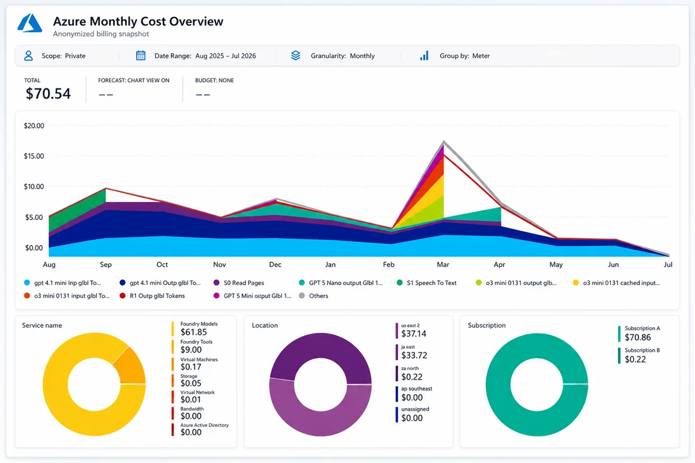
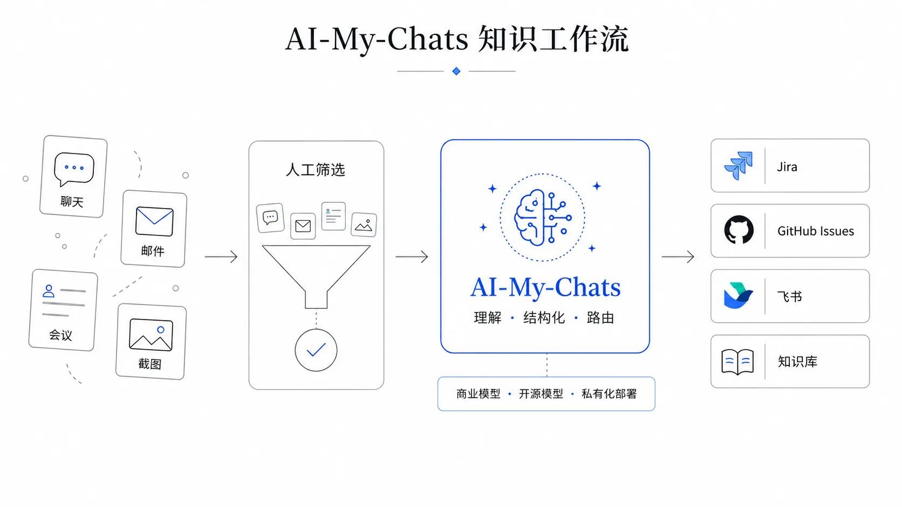
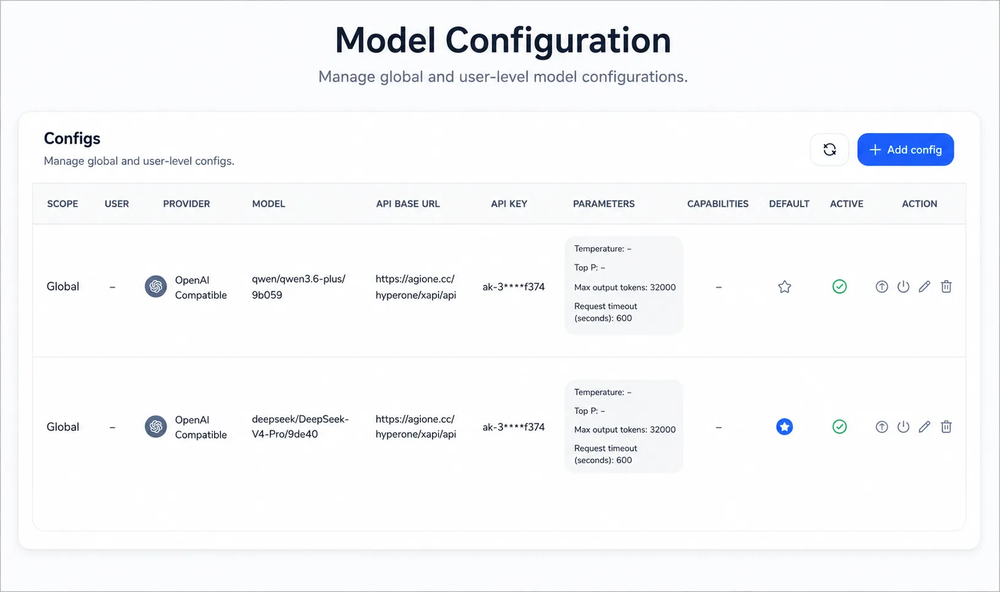

我们如何用 AI，把碎片化的聊天、邮件、截图，
沉淀为企业可追踪、可复用的知识
每个月，我们花
每条节省 15～30 分钟，一个月处理 100+ 条碎片化知识
切换到开源模型后，这个成本最近进一步降到了约 $3.1 / 月
转发到指定邮箱，AI 自动提炼上下文、TODO 和附件，在目标仓库创建结构化 Issue——还能指定输出语言。

邮件、聊天、截图、日志……
每天都在产生有价值的信息
不是没有知识，是整理成本太高
内部项目、技术细节、业务数据
能放心交给外部模型服务吗？
用户主动选择、模型自由组合，AI-My-Chats 正面回应

识别图片里有哪些字
但看不懂图和上下文的关系
同时理解图片内容 + 完整上下文
准确判断背景、意图和后续动作
理解 · 结构化 · 路由
不是把信息固定转换到某个系统，而是先整理成有效知识，再路由到企业真正需要它的地方。
企业真正需要的不是无限的组合方式，
而是针对具体问题、经过验证、能直接使用的产品。
核心能力和主要流程已经跑通，FDE 到客户现场完成最后的配置、微调和集成——不是每次从零构建。
而是企业沉淀知识的一种新方式——
Devify 开源，模型、部署方式自由组合
$3.1/月，验证了低成本稳定运行的可能
碎片化沟通变成可检索、可追溯的企业知识